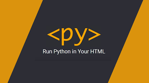

PyScript, le framework pour créer des applications Python avancées dans le navigateur
Dans un discours-programme à la PyCon 2022 à Salt Lake City, Utah, Peter Wang, Président-directeur général d'Anaconda, Inc a présenté un autre entrant dans le domaine des interpréteurs Python dans les navigateurs. La communauté Python a longtemps cherché un moyen de pouvoir écrire Python, au lieu de JavaScript, pour l'exécuter dans les navigateurs web, et il y a eu divers efforts en ce sens au fil des ans. Wang a annoncé PyScript comme un nouveau framework, construit sur l'un de ces projets antérieurs, pour permettre l'écriture de scripts Python directement dans le navigateur.
PyScript est donc un « framework pour créer des applications Python riches dans le navigateur ». Il permet d'imbriquer Python et HTML, fournit un accès complet au DOM et donne au code l'accès aux bibliothèques JavaScript, dans les deux sens. Le code Python peut appeler JavaScript ou être appelé par JavaScript. Ainsi, toute la logique et le code de l'application peuvent se trouver dans un seul langage, dans le navigateur, aucun serveur Web n'est nécessaire.
Il est nécessaire de télécharger PyScript lui-même, mais cela se fait à partir du fichier HTML à l'aide de la balise script.
PyScript est un « framework d'opinion » qui fournit une interface de fonction étrangère (FFI) pour parler à JavaScript et au DOM ; Python a déjà intégré C, C++ et Fortran, donc JavaScript peut également être ajouté à la liste. « C'est vraiment l'informatique sans serveur ».